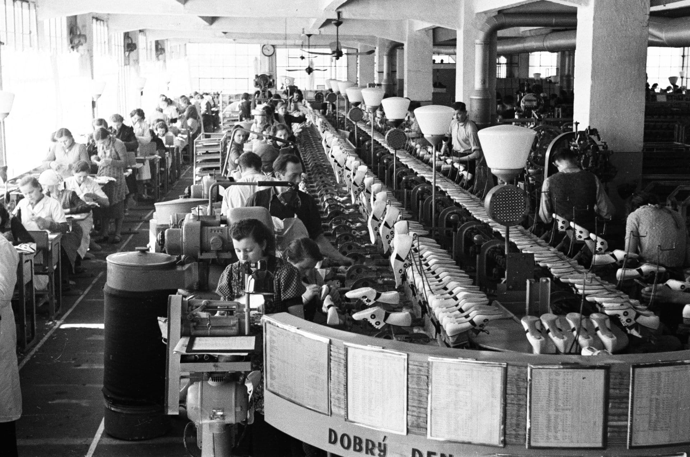
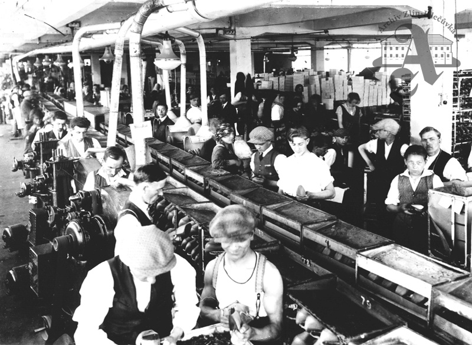
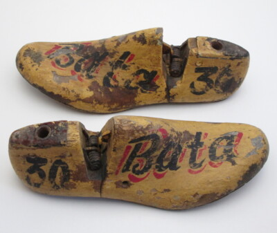
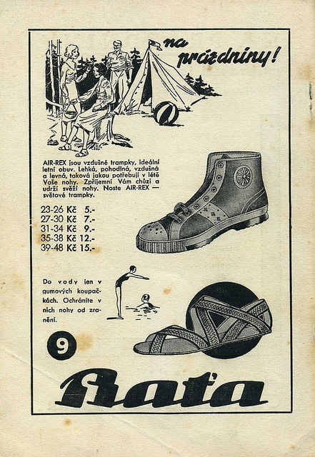
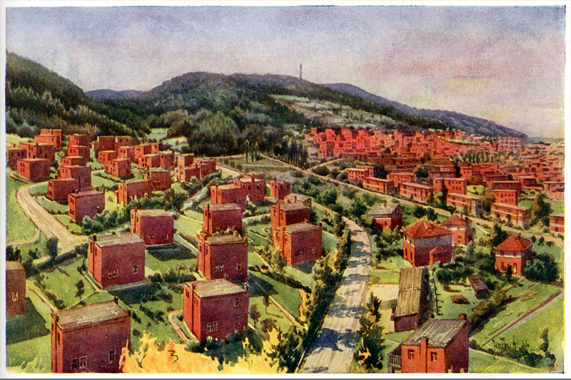
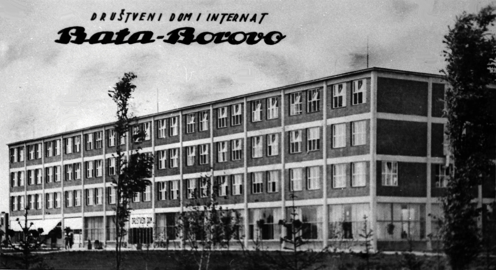
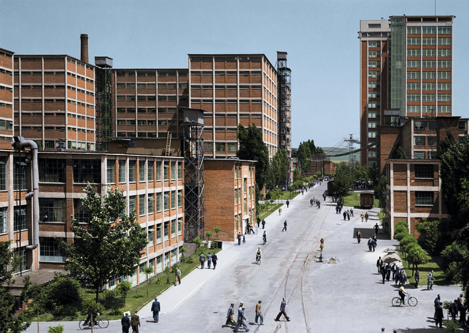
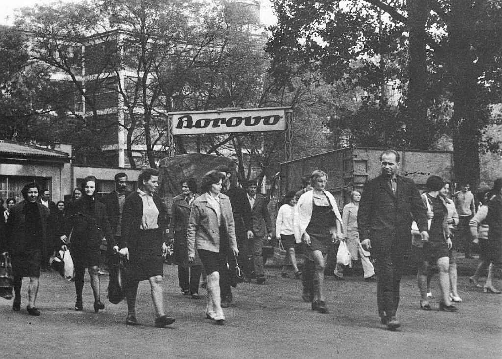

„Аутономија радионице није само јефтинија, већ је и боља... систем непогрешив и сигуран као закон Земљине гравитације морао је бити пронађен.“

Садржај:
Томаш Бата није био само индустријалац и предузетник у области обуће, већ и један од најзначајнијих европских иноватора у погледу организације рада, производње и друштвене инфраструктуре. Његове иновације нису биле ограничене само на фабрике, већ су обухватале целокупан начин живота радника и развој градова.
1. Иновације у производњи обуће
- Серијска производња по узору на Фордове траке - Бата је међу првима у Европи увео тракасту производњу (асембли линију), што је драстично повећало продуктивност.
- Стандардизација модела и материјала - уместо разноврсних облика, креирао је једноставне, функционалне и приступачне моделе, који су се могли масовно производити.
- Снижавање цена - један од његових највећих успеха је „Батина цена“: снижавао је трошкове производње и тиме обућу учинио доступном широким слојевима становништва.



2. Иновације у организацији рада
- Децентрализација фабрике - производња је била подељена на мале јединице („радионице“) од по 30-40 радника, које су деловале готово као мала предузећа. Свака је имала своје циљеве и одговорност.
- Плаћање по учинку - радници су били награђивани на основу продуктивности, а не фиксних плата, што је мотивисало бољи рад.
- Јасна хијерархија и систем напредовања - млади радници су добијали прилику да кроз обуку напредују до руководећих места.
3. Иновације у социјалном моделу (Бата – „градитељ градова“)
- Индустријски градови - око фабрика је градио читаве градове („Бата градови“) са модерним становима, школама, болницама, библиотекама и спортским теренима.
- Социјална сигурност - радници су имали приступ здравственој заштити, школовању деце и културном животу, што је у то време било револуционарно.
- Образовање и пракса - оснивао је школе у којима су ученици учили занат уз рад у фабрици. То је био облик дуалног образовања, који је касније постао узор многим системима.


4. Иновације у транспорту и инфраструктури
- Сопствени транспортни систем - имао је железнице, аеродроме, бродове и друмски транспорт који су служили искључиво Батиној компанији.
- Батин канал - пловни канал за транспорт угља и робе, али и за наводњавање и заштиту од поплава.
- Развој логистике - његова компанија је функционисала као потпуно самосталан „свет у малом“ - од производње до дистрибуције.
5. Иновације у глобализацији пословања
- Мрежа продавница - отворио је хиљаде малопродајних радњи у Европи, Америци, Азији и Африци.
- Међународне фабрике - да би избегао царине и осигурао брзу испоруку, отварао је фабрике у разним земљама (Индија, Канада, Холандија, Југославија…).
- Флексибилност и прилагођавање тржишту - производи су се прилагођавали локалним условима и куповној моћи становништва.



6. Иновације у менаџменту и филозофији рада
- „Служити јавности значи служити себи“ - Батин мото је био да успех долази ако се ради у корист заједнице.
- Транспарентност - свакодневно су објављиване производне и финансијске бројке, да би радници тачно знали колико њихов рад вреди.
- Систем личне одговорности - руководиоци су били одговорни за успех или неуспех својих јединица, што је спречавало пасивност.